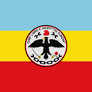

Day 5: Exploring Colombia
Introduction to Colombia
Colombia is a country of stunning contrasts, with a diverse landscape that includes the Andes Mountains, Amazon rainforest, and Caribbean beaches. The capital city, Bogotá, is perched high in the Andes and is known for its rich history and vibrant culture.
This image captures the diverse landscapes of Colombia, from its towering mountains to its lush rainforests and pristine beaches.
Big Cities
Colombia's cities each offer a unique cultural experience. Medellín, known as the "City of Eternal Spring," is famous for its pleasant weather and innovative public transportation system. Cali, the "Salsa Capital of the World," is known for its vibrant music and dance scene.

This image shows Medellín, a city famous for its spring-like weather and modern transportation.

This image shows Cali, known for its lively salsa music and dance culture.
Natural Beauty
Colombia is renowned for its breathtaking natural beauty. The country is the world's second most biodiverse nation, with ecosystems ranging from the Amazon rainforest to the Andes Mountains. Colombia's coffee region, known as the "Eje Cafetero," is famous for its rolling hills and coffee plantations.

This image shows Cocora Valley, home to the tallest palm trees in the world, known as Quindío wax palms.
This image shows the beautiful Tayrona National Park, a coastal reserve with amazing beaches and dense jungle.

This image shows Caño Cristales, often called the "River of Five Colors," considered one of the most beautiful rivers in the world.
People and Languages
Colombians are known for their warmth and hospitality. Spanish is the official language, but many indigenous languages are also spoken throughout the country. Colombia's rich cultural heritage is reflected in its music and dance, with genres like salsa, cumbia, and vallenato being popular nationwide.

This image shows salsa dancing in Cali, a city famous for its vibrant salsa culture.
Famous Colombians
Colombia has produced many internationally renowned figures. Shakira, a singer and songwriter known for hits like "Hips Don't Lie," is one of Colombia's most famous celebrities. Gabriel García Márquez, the Nobel Prize-winning author of "One Hundred Years of Solitude," is celebrated for his magical realism and has made a huge impact on world literature.
This image shows Shakira, one of Colombia's most famous singers, known worldwide for her music.
This image shows Gabriel García Márquez, a Nobel Prize-winning author famous for his magical realism stories.
what to know?
Colombia is a country full of contrasts. It has towering mountains, vast rainforests, and beautiful beaches.
The capital city, Bogotá, is located high in the Andes Mountains. It has a rich history and is known for its vibrant culture.
Colombia's diverse landscape makes it a special place to visit. You can experience everything from cool mountain air to warm, sunny beaches.
Many people come to Colombia to explore its natural beauty and learn about its unique culture and history.
Colombia's big cities are known for their unique cultures. Medellín is called the "City of Eternal Spring" because of its pleasant weather.
Cali is famous for its lively salsa music and dancing. People from all over the world come to Cali to enjoy its vibrant nightlife.
Each city in Colombia has something special to offer, whether it's the weather, music, or food. There's always something new to discover.
Visiting cities like Medellín and Cali gives you a chance to experience the heart of Colombia's culture.
Departments, Their Flags, and Capital Cities in Colombia
| Department | Flag | Capital City |
|---|---|---|
| Antioquia | Medellín | |
| Valle del Cauca |  |
Cali |
| Atlántico |  |
Barranquilla |
| Cundinamarca |  | Bogotá |
Conclusion
Colombia is a vibrant and diverse country, offering something for every traveler. Whether you're interested in exploring bustling cities, hiking through lush rainforests, or relaxing on pristine beaches, Colombia has it all.
Are you ready to explore Colombia? Start planning your trip today and discover all that this beautiful country has to offer!
Did You Know?
Did you know that Colombia is the only country in South America with coastlines on both the Pacific Ocean and the Caribbean Sea?
Did you know that Colombia is the leading producer of emeralds in the world?
Did you know that the Amazon River starts in Colombia before flowing into Brazil?
Did you know that the Andes Mountains run through Colombia, making it one of the few countries with three different mountain ranges?
Did you know that Colombia is home to more than 1,800 species of birds, making it a birdwatcher's paradise?